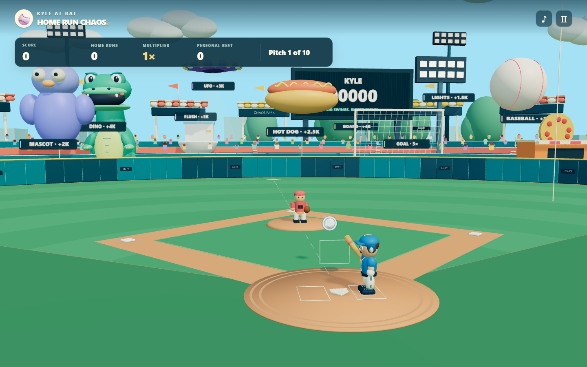
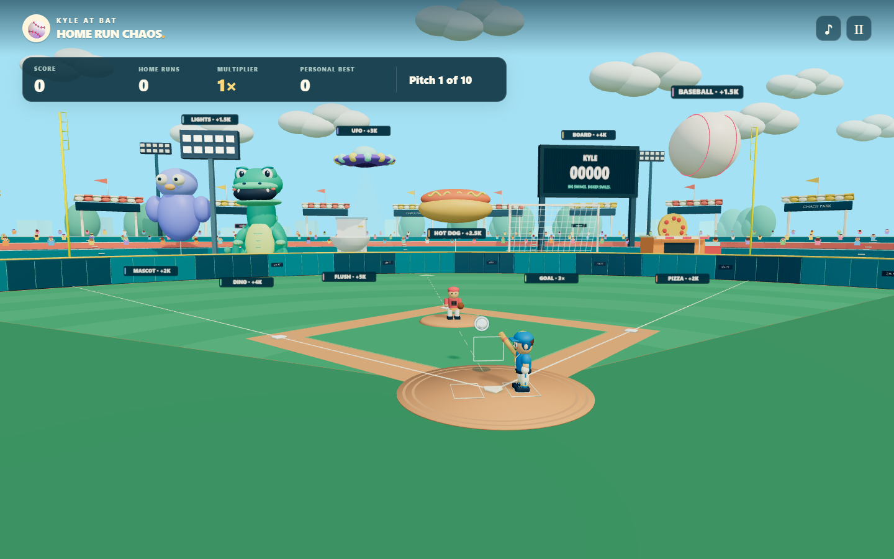
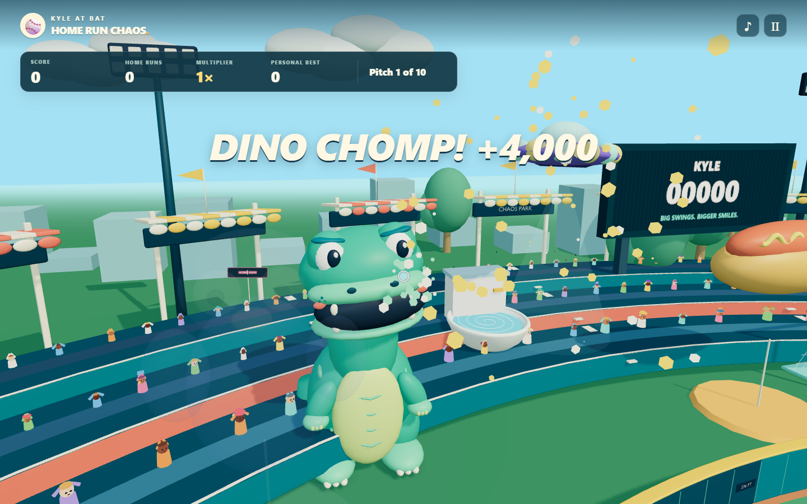
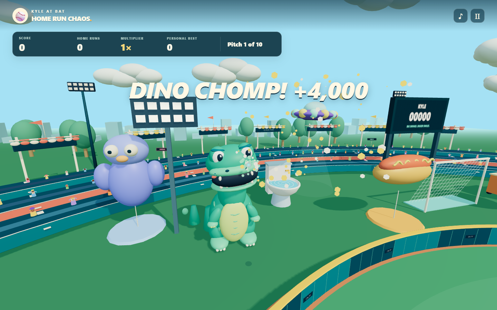

Room for every attraction.
Kyle’s Home Run Chaos · Corrected foul geometry and stadium spacing
From home plate to the foul corners
BEFORE · UPRIGHT CHALK AND CROWDED ATTRACTIONS
AFTER · FLAT CHALK, WALL-MOUNTED POLES, CLEAR TARGETS
Following the ball into the dinosaur target
BEFORE · MASCOT OCCLUSION AND CROWD INTERSECTIONS
AFTER · SEPARATE ATTRACTION AND SEATING AREAS